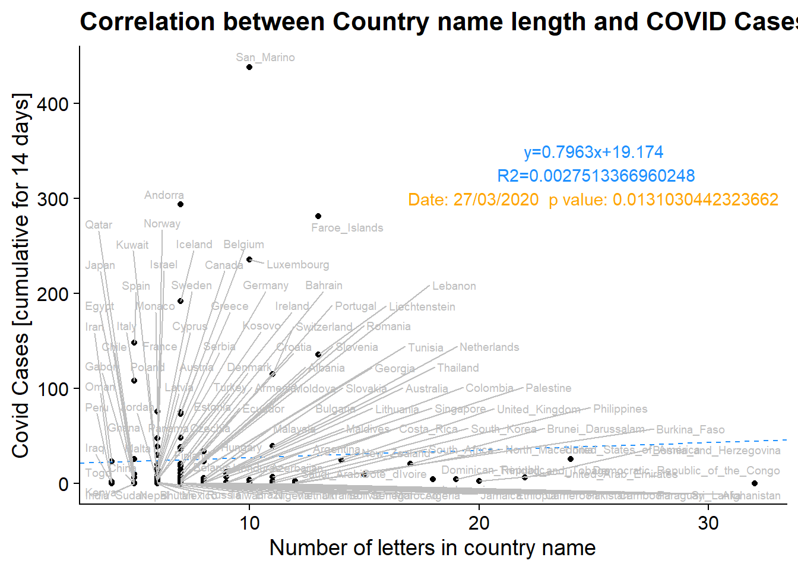
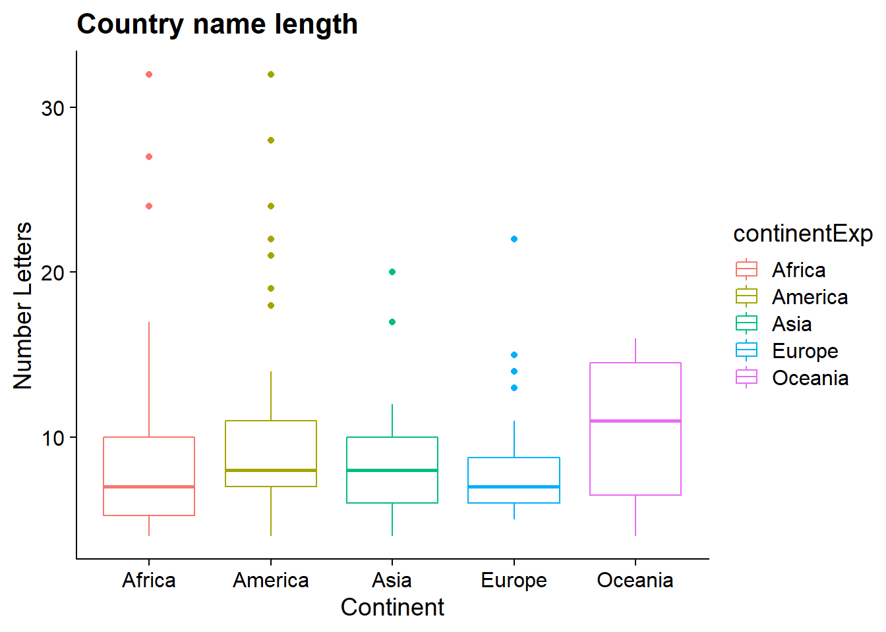
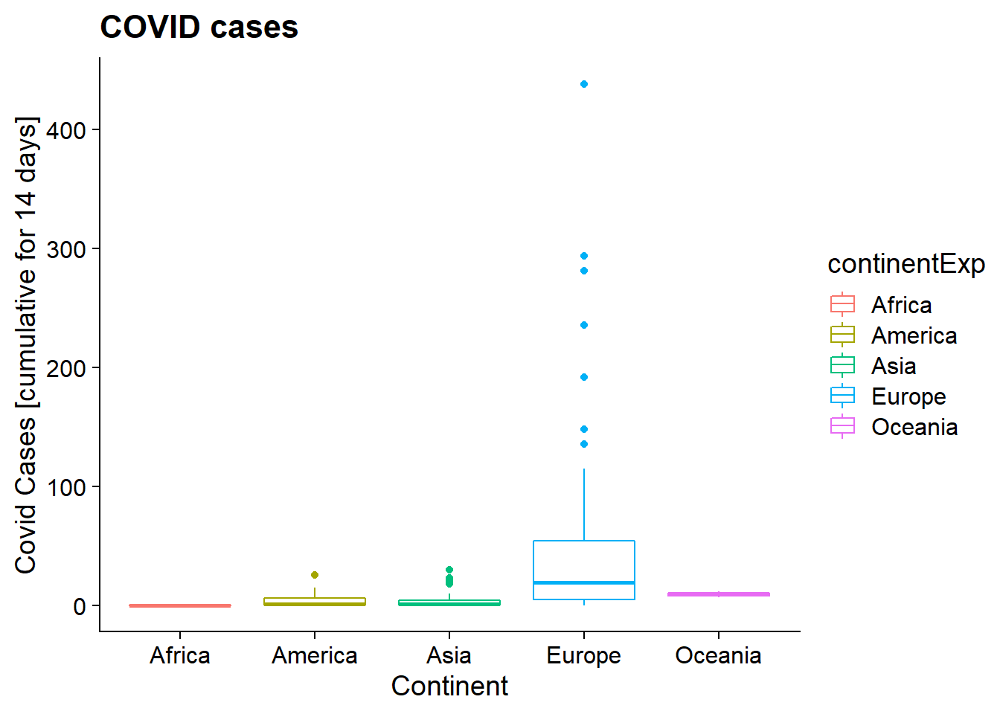

Last updated: 2020-09-18
Checks: 6 1
Knit directory: myproject/
This reproducible R Markdown analysis was created with workflowr (version 1.6.2). The Checks tab describes the reproducibility checks that were applied when the results were created. The Past versions tab lists the development history.
The R Markdown file has unstaged changes. To know which version of the R Markdown file created these results, you’ll want to first commit it to the Git repo. If you’re still working on the analysis, you can ignore this warning. When you’re finished, you can run wflow_publish to commit the R Markdown file and build the HTML.
Great job! The global environment was empty. Objects defined in the global environment can affect the analysis in your R Markdown file in unknown ways. For reproduciblity it’s best to always run the code in an empty environment.
The command set.seed(20200915) was run prior to running the code in the R Markdown file. Setting a seed ensures that any results that rely on randomness, e.g. subsampling or permutations, are reproducible.
Great job! Recording the operating system, R version, and package versions is critical for reproducibility.
Nice! There were no cached chunks for this analysis, so you can be confident that you successfully produced the results during this run.
Great job! Using relative paths to the files within your workflowr project makes it easier to run your code on other machines.
Great! You are using Git for version control. Tracking code development and connecting the code version to the results is critical for reproducibility.
The results in this page were generated with repository version 3d27894. See the Past versions tab to see a history of the changes made to the R Markdown and HTML files.
Note that you need to be careful to ensure that all relevant files for the analysis have been committed to Git prior to generating the results (you can use wflow_publish or wflow_git_commit). workflowr only checks the R Markdown file, but you know if there are other scripts or data files that it depends on. Below is the status of the Git repository when the results were generated:
Ignored files:
Ignored: .Rhistory
Ignored: .Rproj.user/
Unstaged changes:
Modified: analysis/stats_challenge.Rmd
Note that any generated files, e.g. HTML, png, CSS, etc., are not included in this status report because it is ok for generated content to have uncommitted changes.
These are the previous versions of the repository in which changes were made to the R Markdown (analysis/stats_challenge.Rmd) and HTML (docs/stats_challenge.html) files. If you’ve configured a remote Git repository (see ?wflow_git_remote), click on the hyperlinks in the table below to view the files as they were in that past version.
| File | Version | Author | Date | Message |
|---|---|---|---|---|
| html | 3d27894 | Hanna | 2020-09-18 | Build site. |
| html | fa2ddc5 | Hanna | 2020-09-18 | Build site. |
| Rmd | 016a23a | Hanna | 2020-09-18 | stats challenge |
# read data
library(utils)
#read the Dataset sheet into “R”. The dataset will be called "data".
data <- read.csv("https://opendata.ecdc.europa.eu/covid19/casedistribution/csv", na.strings = "", fileEncoding = "UTF-8-BOM")
# the code below shows how you may recode the country name's
#first letter to a numeric alphabetic position.
data1 <- data[(data$dateRep=="11/08/2020"), ]
CountryAb <- as.integer((nchar(data1$countriesAndTerritories)))
# build a linear model for the relationship between Cumulative_number_for_14_days_of_COVID.19_ca
model1<- lm(Cumulative_number_for_14_days_of_COVID.19_cases_per_100000~CountryAb, data=data1)
summary(model1)
Call:
lm(formula = Cumulative_number_for_14_days_of_COVID.19_cases_per_100000 ~
CountryAb, data = data1)
Residuals:
Min 1Q Median 3Q Max
-54.10 -46.82 -34.45 9.62 432.80
Coefficients:
Estimate Std. Error t value Pr(>|t|)
(Intercept) 46.582 10.757 4.330 2.32e-05 ***
CountryAb 0.258 1.002 0.257 0.797
---
Signif. codes: 0 '***' 0.001 '**' 0.01 '*' 0.05 '.' 0.1 ' ' 1
Residual standard error: 78.78 on 207 degrees of freedom
Multiple R-squared: 0.00032, Adjusted R-squared: -0.004509
F-statistic: 0.06626 on 1 and 207 DF, p-value: 0.7971# On 8/11/2020, we did not find a significant relationship
# between alphabetic order of country name and COVID-19 cases.
#But what if we keep looking at other dates?Lets do a for loop to do the stats test for this:
dates = levels(as.factor(data$dateRep)) ##all unique dates we have data on
for (i in seq(1,length(dates))){
#print(i)
data1 = data %>% filter(dateRep ==dates[i]) %>%
na.omit()
if(nrow(data1) > 1){
#CountryAb <- as.integer(as.factor(substr(data1$countriesAndTerritories,1,1)))
data1 = data1 %>% mutate(CountryAb= as.integer(as.factor(nchar((data1$countriesAndTerritories)))))
alphabet = data1 %>% group_by(CountryAb)
means = alphabet %>% summarise(mean = mean(Cumulative_number_for_14_days_of_COVID.19_cases_per_100000))
iqr = alphabet %>% summarise(IQR = IQR(Cumulative_number_for_14_days_of_COVID.19_cases_per_100000))
quant1 = alphabet %>%
summarise(quant1= quantile(Cumulative_number_for_14_days_of_COVID.19_cases_per_100000)[2])
quant3 = alphabet %>%
summarise(quant3= quantile(Cumulative_number_for_14_days_of_COVID.19_cases_per_100000)[4])
##filter out the outliers
data1 = data1 %>% left_join(means, ., by=c("CountryAb"="CountryAb")) %>%
left_join(iqr, ., by=c("CountryAb"="CountryAb")) %>%
left_join(quant1, ., by=c("CountryAb"="CountryAb")) %>%
left_join(quant3, ., by=c("CountryAb"="CountryAb")) %>%
filter(Cumulative_number_for_14_days_of_COVID.19_cases_per_100000 > quant1 - IQR*1.5 |Cumulative_number_for_14_days_of_COVID.19_cases_per_100000 < quant3 + IQR*1.5 )
model1 <- lm(Cumulative_number_for_14_days_of_COVID.19_cases_per_100000~CountryAb, data=data1)
sum = summary(model1)
if(sum$coefficients[2,4] < 0.05){
print(paste("CountryAb p-value:",sum$coefficients[2,4]),quote = F)
print("Significant!")
print(dates[i])
sig_date = (dates[i])
p_val = sum$coefficients[2,4]
}
}
}[1] CountryAb p-value: 0.00748299725523194
[1] "Significant!"
[1] "24/03/2020"
[1] CountryAb p-value: 0.00687706604930121
[1] "Significant!"
[1] "25/03/2020"
[1] CountryAb p-value: 0.00976040945291237
[1] "Significant!"
[1] "26/03/2020"
[1] CountryAb p-value: 0.0131030442323662
[1] "Significant!"
[1] "27/03/2020"Plotting the data as a scatterplot, we can see that the correlation between country name length and covid cases is likely due to a large number of short-named countries having very few cases. There certainly is no causal reason for COVID cases to be higher in counties with shorter names, as the country name does not incluence factors like mask-wearing, social distancing, international travel, or ACE2 expression. While intuitively name length has no connection to variables known to control for covid spread, it could be plausible that there is a correlation, due to counties from certain regions having similarities in language and therefore name length, as well as closeness geographically leading to more frequent travel, and therefore, virus presence being similar amongst these nations. To verify that we have indeed hacked the p-value through excessive testing of combinations of variables rather than detecting a correlation we plotted the country name length and COVID cases by country. It is apparent that there is no underlying correlation in country name and COVID spread. Additionally, out of the 263 dates tested, we found 4 significant dates. This is well within the expected number of false positive results and when considering potential corrections, like Bonferroni, we see for the 4 dates in question the p-values shift from (0.00748, 0.00687, 0.00976, 0.01310) to (1, 1, 1, 1).
df = subset(data, data$dateRep == sig_date)
data2 <- data[(data$dateRep==sig_date), ]
CountryAb <- as.integer((nchar(data2$countriesAndTerritories)))
df = df %>% mutate( CountryAb = CountryAb )
plot_1 = ggplot(df, aes_string(x = "CountryAb", y = "Cumulative_number_for_14_days_of_COVID.19_cases_per_100000")) + geom_point() + labs( x = "Number of letters in country name", y = "Covid Cases [cumulative for 14 days]", title = "Correlation between Country name length and COVID Cases") + theme_cowplot()
fit = lm(Cumulative_number_for_14_days_of_COVID.19_cases_per_100000 ~ CountryAb, df)
summary(fit)
Call:
lm(formula = Cumulative_number_for_14_days_of_COVID.19_cases_per_100000 ~
CountryAb, data = df)
Residuals:
Min 1Q Median 3Q Max
-44.60 -24.17 -21.68 -8.53 411.14
Coefficients:
Estimate Std. Error t value Pr(>|t|)
(Intercept) 19.1747 13.2098 1.452 0.149
CountryAb 0.7964 1.4200 0.561 0.576
Residual standard error: 64.45 on 114 degrees of freedom
(78 observations deleted due to missingness)
Multiple R-squared: 0.002751, Adjusted R-squared: -0.005996
F-statistic: 0.3145 on 1 and 114 DF, p-value: 0.576p_val_label = paste0("Date: ", sig_date, " p value: ", p_val)
plot_1_label = paste0("y=", substr((coef(fit)[2]),1,6), "x+", substr((coef(fit)[1]),1,6))
plot_1_label_2 = paste0(" R2=", summary(fit)$r.squared)
plot_1 = plot_1 + geom_abline(color = "dodgerblue", linetype = "dashed", intercept = coef(fit)[1], slope = coef(fit)[2]) + annotate(geom="text", x=25, y=350, label=plot_1_label, color="dodgerblue") + annotate(geom="text", x=25, y=325, label=plot_1_label_2, color="dodgerblue") + annotate(geom="text", x=25, y=300, label=p_val_label, color="orange") + geom_text_repel(mapping = aes_string(label = "countriesAndTerritories"), size = 2.5, color = "gray")
print(plot_1)Warning: Removed 78 rows containing missing values (geom_point).Warning: Removed 78 rows containing missing values (geom_text_repel).
plot_2_A = ggplot(df, aes(x = as.factor(continentExp), y = CountryAb, color = continentExp)) + geom_boxplot(na.rm = TRUE) + labs( x = "Continent", y = "Number Letters", title = "Country name length") + theme_cowplot()
print(plot_2_A)
plot_2_B = ggplot(df, aes(x = as.factor(continentExp), y = Cumulative_number_for_14_days_of_COVID.19_cases_per_100000, color = continentExp)) + geom_boxplot(na.rm = TRUE) + labs( x = "Continent", y = "Covid Cases [cumulative for 14 days]", title = "COVID cases") + theme_cowplot()
print(plot_2_B)
sessionInfo()R version 4.0.2 (2020-06-22)
Platform: x86_64-w64-mingw32/x64 (64-bit)
Running under: Windows 10 x64 (build 18363)
Matrix products: default
locale:
[1] LC_COLLATE=English_United States.1252
[2] LC_CTYPE=English_United States.1252
[3] LC_MONETARY=English_United States.1252
[4] LC_NUMERIC=C
[5] LC_TIME=English_United States.1252
attached base packages:
[1] stats graphics grDevices utils datasets methods base
other attached packages:
[1] ggrepel_0.8.2 cowplot_1.1.0 forcats_0.5.0 stringr_1.4.0
[5] purrr_0.3.4 readr_1.3.1 tidyr_1.1.2 tibble_3.0.3
[9] ggplot2_3.3.2 tidyverse_1.3.0 dplyr_1.0.2
loaded via a namespace (and not attached):
[1] tidyselect_1.1.0 xfun_0.17 haven_2.3.1 colorspace_1.4-1
[5] vctrs_0.3.4 generics_0.0.2 htmltools_0.5.0 yaml_2.2.1
[9] blob_1.2.1 rlang_0.4.7 later_1.1.0.1 pillar_1.4.6
[13] withr_2.2.0 glue_1.4.2 DBI_1.1.0 dbplyr_1.4.4
[17] modelr_0.1.8 readxl_1.3.1 lifecycle_0.2.0 munsell_0.5.0
[21] gtable_0.3.0 workflowr_1.6.2 cellranger_1.1.0 rvest_0.3.6
[25] evaluate_0.14 labeling_0.3 knitr_1.29 httpuv_1.5.4
[29] fansi_0.4.1 broom_0.7.0 Rcpp_1.0.4.6 promises_1.1.1
[33] backports_1.1.9 scales_1.1.1 jsonlite_1.7.1 farver_2.0.3
[37] fs_1.5.0 hms_0.5.3 digest_0.6.25 stringi_1.5.3
[41] rprojroot_1.3-2 grid_4.0.2 cli_2.0.2 tools_4.0.2
[45] magrittr_1.5 crayon_1.3.4 whisker_0.4 pkgconfig_2.0.3
[49] ellipsis_0.3.1 xml2_1.3.2 reprex_0.3.0 lubridate_1.7.9
[53] assertthat_0.2.1 rmarkdown_2.3 httr_1.4.2 rstudioapi_0.11
[57] R6_2.4.1 git2r_0.27.1 compiler_4.0.2